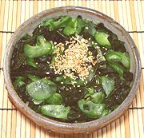

|
Cucumber Seaweed SaladJapan - Kyuri No Sunomono | ||||
| Makes: Effort: Sched: DoAhead: |
*** hrs Yes |
This refreshing Sunomono is very popular in Japan. I have cut the amount of sugar called for in most authentic recipes by 1/3, as I like it less sweet than they do in Japan. See also Comments: | |||
|
14 1/2 1/2 ----- 3 2 1/4 1/3 ----- 1 |
oz t oz --- T t t t --- t |
Cucumbers (1) Salt Wakame, dry (2) -- Dressing Rice Vinegar Sugar Soy Sauce Salt -- Garnish Sesame Seeds, toasted (3) |
Make - (40 min - 10 min work)
|